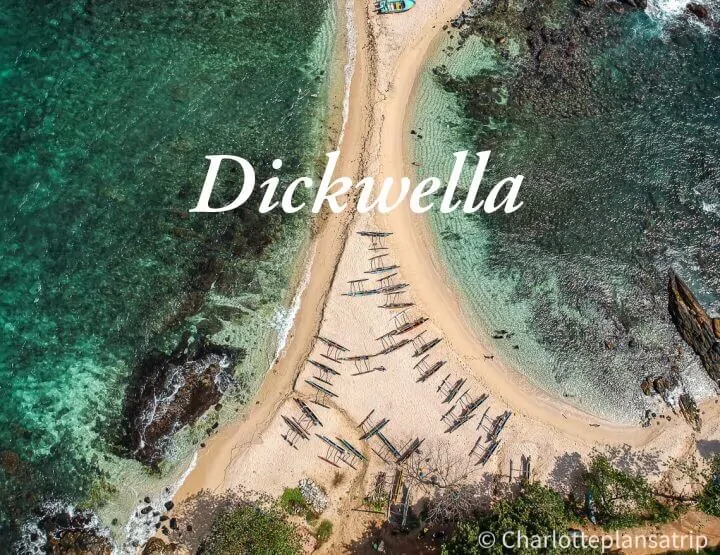
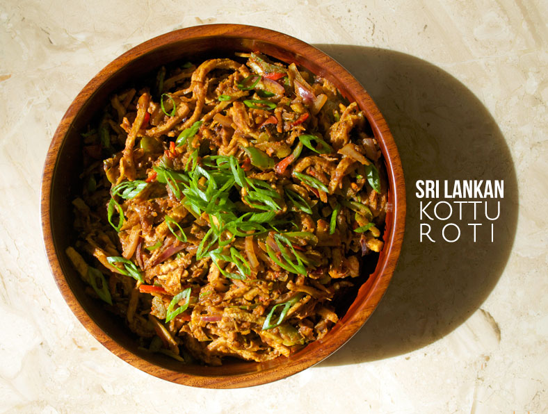
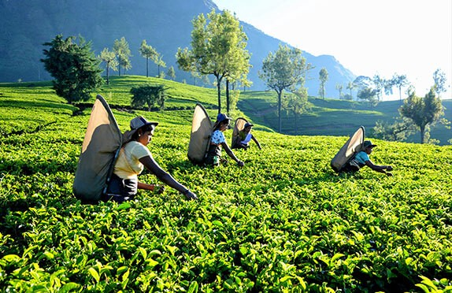

Tourist Attractions in Sri Lanka
Sri Lanka is the No 1 in Lonely Planet‘s Top 10 countries to visit in 2019

Almost 10 years after the end of its civil war,
Sri Lanka has been named the best country in the world to visit in 2019 by Lonely Planet.
Better transport links, new hotels and a growing number of activities were cited as the reason the
south-Asian island was chosen for the top spot in the guidebook publisher ’s annual Best in Travel awards.
Understandably, people are wary about travelling to Sri Lanka at the moment,
but I’m of the opinion that now is the best time to support the country. Tourism is down, which means crowds are as well,
but the people are no less friendly and the scenery no less awe-inducing. You could spend a few days in Colombo,
but for a more peaceful environment, head for the hills. Nuwara Eliya is Sri Lanka’s tea country with verdant,
rolling hills and fresh air, but I preferred the smaller, laid-back town of Ella.
Sri Lankan Cuisine No.1 in BBC Good Food

Sri Lanka is emerging as an Asian hotspot with its stellar combination of World Heritage sites, wildlife, history,
rich culture, pristine beaches and friendly people. For travelers it’s a feast for all the senses.Sri Lankan cuisine
has topped the list this year, ranked no. 1 as an already emerging food trend for the year 2019.
Here’s what they have to say:
“Restaurants such as London’s Hoppers, mini chain The Coconut Tree and the success of the M&S
Taste Asia range have put Sri Lankan food on the brink of a breakthrough. Think hoppers
(bowl-shaped rice flour pancakes), kottu roti (fried veg, eggs, shredded roti and curry,
as sold by street stall Kottu Lanka) and pol sambol coconut relish.‘Before, Sri Lankan was lumped
in with Indian cuisine but now, we’re not having an “Indian” anymore. It’s recognised in its own right,’
says Emma Weinbren, food trends editor at retail magazine The Grocer.”
Don’t leave Sri Lanka without trying…
Kottu roti.
The Lowdown on Tea Plantations in Sri Lanka

No trip to Sri Lanka would be complete without spending a little time visiting a Sri Lankan tea plantation in the Hill Country.
On a tea plantation visit you can learn all about tea picking and tea processing and also enjoy some fine Sri Lankan tea tasting.
It’s probably a much more exciting prospect if you’re a tea lover, but even if you’re not, the Hill Country (or Tea Country, as
it’s sometimes called) is arguably the most scenic part of the island and worth a visit.
You’ll find rolling hills clad with row upon row of luscious, green tea plants. It’s often shrouded in a fine mist, and is the perfect escape from the heat of
Sri Lanka’s wonderful beaches (if you need an escape!).
The tea plantations of Sri Lanka offer such a beautiful contrast to the rest of Sri Lanka, and Hill Country
is well worth including in your Sri Lankan itinerary along with some wildlife spotting on a safari in
Udawalawe National Park or Yala National Park.